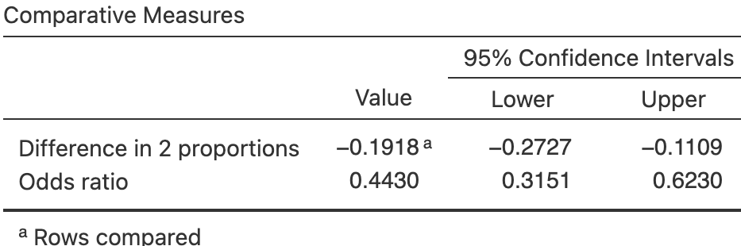
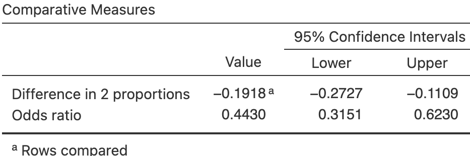
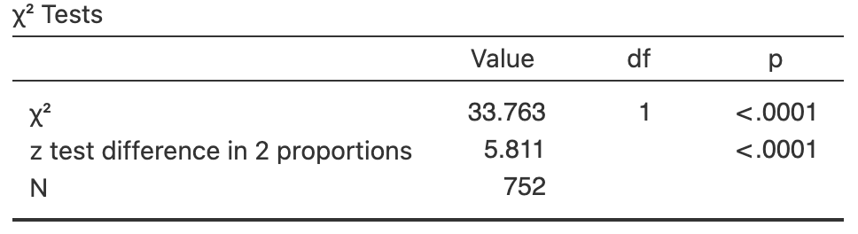
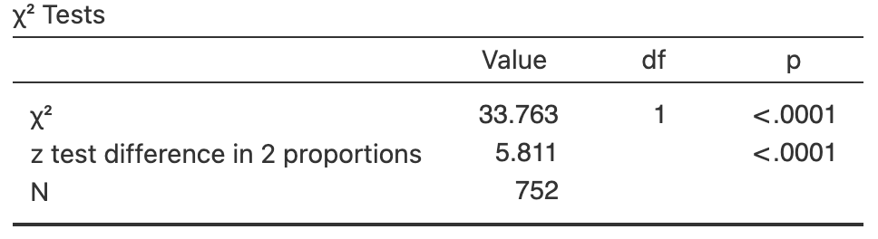

31 Comparing two odds or proportions: CIs and tests
You have learnt to ask an RQ, design a study, classify and summarise the data, construct confidence intervals, and conduct hypothesis tests. In this chapter, you will learn to:
- identify situations where comparing proportions or odds is appropriate.
- form confidence intervals for the difference between two proportions.
- form confidence intervals for odds ratios.
- conduct hypothesis tests for comparing two proportions.
- conduct hypothesis tests for comparing two odds.
- determine whether the conditions for using these methods apply in a given situation.
31.1 Introduction: meals on-campus
Mann and Blotnicky (2017) examined the relationship between where university students usually ate, and where the student lived, for students from two Canadian universities. The researchers cross-classified the \(n = 183\) students (the units of analysis) according to two qualitative variables:
- where the student lived, with their parents or not with their parents.
- where the student ate most meals, off-campus or on-campus.
Both variables are qualitative, so means are not appropriate for summarising the data. The data can be compiled into a two-way table of counts (Table 31.1), also called a contingency table. Both qualitative variables have two levels, so this is a \(2\times 2\) table. Every cell in the \(2\times 2\) table contains different students, so the comparison is between individuals.
The study has one sample of students, classified according to two variables (i.e., each student is placed into one of the four cells in the \(2\times 2\) table).
| Most off-campus | Most on-campus | |
|---|---|---|
| Living with parents | \(52\) | \(\phantom{0}\phantom{0}2\) |
| Not living with parents | \(105\) | \(\phantom{0}24\) |
The proportion of students who eat most meals off-campus can be compared between those who live with their parents and those who do not live with their parents. Then, the parameter is the difference between the population proportions in each group.
Alternatively, the odds of students who eat most meals off-campus can be compared between those who live with their parents and those who do not live with their parents. Then, the parameter is the comparison of the odds in both groups, the odds ratio (OR); specifically, the OR of eating most meals off-campus, comparing those living with parents to those not living with parents.
The table can be constructed with either variable as the rows. However, software commonly compares rows, so it makes sense to place the groups to be compared (i.e., the levels of the explanatory variable) in the rows of the table.
31.2 Summarising data
Since two groups are being compared, subscripts are used to distinguish between the two groups; say, Groups \(1\) and \(2\) in general (Table 31.2). For this example, we use \(N\) to refer to students not living with their parents, and \(L\) for students living with their parents.
| Group 1 | Group 2 | Comparing groups | |
|---|---|---|---|
| Sample sizes: | \(n_1\) | \(n_2\) | |
| Sample odds: | \(\text{Odds}_1\) | \(\text{Odds}_2\) | \(\text{Odds ratio (OR)} = \text{Odds}_1/\text{Odds}_2\) |
| Sample proportions: | \(\hat{p}_1\) | \(\hat{p}_2\) | \(\hat{p}_1 - \hat{p}_2\) |
| Standard errors: | \(\displaystyle\text{s.e.}(\hat{p}_1)\) | \(\displaystyle\text{s.e.}(\hat{p}_2)\) | \(\displaystyle\text{s.e.}(\hat{p}_1 - \hat{p}_2)\) |
The parameter is either a difference between two population proportions, or a population OR. For example, the parameter could be the difference between population proportion of students eating most meals off-campus, comparing students living with their parents, to students not living with their parents. Alternatively (and equivalently), the parameter could be the population OR of eating most meals off-campus, comparing students living with their parents, to students not living with their parents.

FIGURE 31.1: Software output for comparing the odds and proportion of students eating most meals at home, for students living with and not with their parents
Since software commonly compares rows (for example, see the text under the bottom table in Fig. 31.1), it makes sense to place the groups to be compared (i.e., the explanatory variable) in the rows of the table.
Then, the difference between the two proportions are usually calculated as the Row 1 proportion minus the Row 2 proportion. Similarly, the odds then can be interpreted as comparing Column 1 counts to Column 2 counts, and the odds ratio as comparing the Row 1 odds to the Row 2 odds.
The RQ and the hypotheses can be written as comparing proportions (Sect. 31.4), comparing odds (Sect. 31.6), or about ORs. With two qualitative variables, an appropriate numerical summary includes the odds and proportions (or percentages) for the outcome for both comparison groups, and the sample sizes (Table 31.3).
To compare the proportions, define the sample proportion of students eating most meals off-campus as \(\hat{p}\), and write \(\hat{p}_L\) for the proportion living with parents and \(\hat{p}_N\) for the proportion not living with parents. Then, \[ \hat{p}_L = \frac{52}{52 + 2} = 0.96296 \quad\text{and}\quad \hat{p}_N = \frac{105}{105 + 24} = 0.813953. \] The difference between the two proportions is \[ \hat{p}_L - \hat{p}_N = 0.9630 - 0.8140 = 0.1490, \] (as in the software output: Fig. 31.1). By this definition, the difference is how much greater the proportion eating most meals off-campus is for students living with their parents, compared to students not living with their parents.
Be clear about how differences are defined! Differences could be computed as:
- the proportion eating most meals off-campus for those living with their parents, minus the proportion not living with their parents. This measures how much greater the proportion is for those living with their parents; or
- the proportion eating most meals off-campus for those not living with their parents, minus the proportion living with their parents. This measures how much greater the proportion is for those not living with their parents.
Either is fine, provided you are consistent, and clear about how the differences are computed. The meaning of any conclusions will be the same.
To compare the odds, first see that the odds of eating most meals off-campus is:
- \(52 \div 2 = 26\) for students living with their parents (Row 1 of Table 31.1).
- \(105\div 24 = 4.375\) for students not living with their parents (Row 2 of Table 31.1).
(Notice the numbers in the second column are always on the bottom of the fraction.) So the OR of eating most meals off-campus (the first column), comparing students living with parents to students not living with parents (second column), is \(26 \div 4.375 = 5.943\) (as in the software output: Fig. 31.2).
The numerical summary (Table 31.3) shows the proportion and odds of eating most meals off-campus, comparing students living at home and those not living at home.
The OR can be interpreted in either of these ways (i.e., both are correct):
- the odds compare Row 1 counts to Row 2 counts, for both columns. The OR then compares the Column 1 odds to the Column 2 odds.
- the odds compare Column 1 counts to Column 2 counts. The OR then compares the Row 1 odds to the Row 2 odds.
Odds and ORs are computed with the first row and first column values on the top of the fraction. Since the explanatory variable is usually in the rows, the second is usually the most useful. In this case, both of the above approaches produces an OR of \(5.943\).
An appropriate graph is a side-by-side bar chart or a stacked bar chart (Fig. 31.2). The side-by-side bar is useful for comparing odds. For instance, in the two left-most bars in Fig. 31.2 (left panel), the first bar is \(26\) times as high as the second bar (and \(26\) is the odds); in the two right-most bars, the first bar is \(4.375\) times as high as the second bar (and \(4.375\) is the odds). A stacked bar chart is useful for comparing proportions.
| Odds of having most meals off-campus | Proportion having most meals off-campus | Sample size | |
|---|---|---|---|
| Living with parents | \(26.000\) | \(\phantom{0}0.963\) | \(\phantom{0}54\) |
| Not living with parents | \(\phantom{0}4.375\) | \(\phantom{0}0.814\) | \(129\) |
| OR: \(5.943\) | Difference: \(0.149\) |
FIGURE 31.2: The student-eating data. Left: a side-by-side bar chart. Right: a stacked bar chart.
31.3 Confidence intervals for comparing proportions
The sample proportions for each group will vary from sample to sample, and the difference between the sample proportions will be different for each sample. Hence, the difference between the two sample proportions has a sampling distribution and standard error. Under certain conditions (Sect. 31.7), this sampling distribution has a normal distribution.
Definition 31.1 (Sampling distribution for the difference between two sample proportions for a CI) When constructing a CI, the sampling distribution of the difference between two sample proportions \(\hat{p}_1\) and \(\hat{p}_2\) is (when the appropriate conditions are met; Sect. 31.7) described by:
- an approximate normal distribution,
- centred around a sampling mean whose value is \({p_1} - {p_2}\), the difference between the population proportions,
- with a standard deviation, called the standard error of the difference between the proportions, of \(\displaystyle\text{s.e.}(\hat{p}_1 - \hat{p}_2)\).
The standard error for the difference between the proportions is found using \[\begin{equation} \text{s.e.}(\hat{p}_1 - \hat{p}_2) = \sqrt{ \text{s.e.}(\hat{p}_1)^2 + \text{s.e.}(\hat{p}_2)^2}, \tag{31.1} \end{equation}\] though this value will often be given (e.g., on computer output).
For the student-eating data, the standard errors of the sample proportions for each group are computed using Equation (22.3) as \[\begin{align*} \text{s.e.}(\hat{p}_L) &= \sqrt{\frac{0.962963 \times (1 - 0.962963)}{54}} = 0.025700, \text{and}\\ \text{s.e.}(\hat{p}_N) &= \sqrt{\frac{0.8139535\times (1 - 0.8139535)}{129}} = 0.034262. \end{align*}\] The standard error of the difference between the proportions is then \[ \text{s.e.}(\hat{p}_L - \hat{p}_N) = \sqrt{ \text{s.e.}(\hat{p}_L)^2 + \text{s.e.}(\hat{p}_N)^2} = \sqrt{ 0.025700^2 + 0.034262^2 } = 0.042830. \]
Thus, the differences between the sample proportions will have:
- an approximate normal distribution,
- centred around the sampling mean whose value is \(p_L - p_N\),
- with a standard deviation of \(\text{s.e.}(\hat{p}_L - \hat{p}_N) = 0.0428295\).
The sampling distribution describes how the values of \(\hat{p}_L - \hat{p}_N\) vary from sample to sample. Then, finding a \(95\)% CI for the difference between the proportions is similar to the process used previously, since the sampling distribution has an approximate normal distribution: \[ \text{statistic} \pm \big(\text{multiplier} \times\text{s.e.}(\text{statistic})\big). \] When the statistic is \(\hat{p}_L - \hat{p}_N\), the approximate \(95\)% CI is \[ (\hat{p}_L - \hat{p}_N) \pm \big(2 \times \text{s.e.}(\hat{p}_L - \hat{p}_N)\big). \] So, in this case, the approximate \(95\)% CI is \[ 0.1490 \pm (2 \times 0.042830), \] or \(0.149 \pm 0.0857\) after rounding (i.e., from \(0.0633\) to \(0.235\)). This approximate CI is very similar to the (exact) CI from software (Fig. 31.2). We write:
The difference between the proportions of students eating most meals at home is \(0.1490\), higher for those living with their parents (\(0.963\); \(n = 52\)) than those not living with their parents (\(0.814\); \(n = 129\)), with the approximate \(95\)% CI from \(0.0633\) to \(0.235\).
The plausible values for the difference between the two population proportions are between \(0.063\) to \(0.235\), larger for those living with parents.
Giving the CI alone is insufficient; the direction in which the differences were calculated must be given, so readers know which group had the higher proportion.
31.4 Hypothesis tests for comparing proportions: \(z\)-test
To compare the two proportions using a hypothesis test, the two-tailed RQ is:
Is the population proportion of students eating most meals off-campus the same for students living with their parents and for students not living with their parents?
As usual, the population values are unknown, so the parameter \(p_L - p_N\) is estimated using the statistic \(\hat{p}_L - \hat{p}_N\).
Hypothesis testing always begins by assuming that the null hypothesis is true (Sect. 28.2.1). In this context, that means assuming that the population proportion of eating most meals off-campus is the same in both groups:
- \(H_0\): \(p_L - p_N = 0\) (equivalent to \(p_L = p_N\)).
From the RQ, the alternative hypothesis is two-tailed:
- \(H_1\): \(p_L - p_N \ne 0\) (equivalent to \(p_L \ne p_N\)).
Because the null hypothesis is assumed to be true, the proportions are assumed to have the same value for both groups. Hence, the data from the two groups can be combined to determine an overall (or common) proportion of students eating most meals off-campus: \[\begin{equation} \hat{p} = \frac{52 + 105}{52 + 105 + 2 + 24} = \frac{157}{183} = 0.85792. \tag{31.2} \end{equation}\] This is the overall proportion of students eating most meals off-campus, since we assumed no difference between students living with and not with their parents. Effectively, this proportion has been computed by summing the columns in Table 31.1 and using this combined data to compute the proportion of students eating most meals off-campus.
As with any hypothesis test, the null hypothesis is assumed to be true. For a test comparing two proportions, that implies the proportion in each group is the same, and so the standard errors are computed using the common (overall) proportion.
The sample proportions for the two groups (\(L\) and \(N\)) will vary from sample to sample and so have a sampling distribution. The standard error of the sample proportion for each sample is computed using this common proportion \(\hat{p}\), using the same idea as in Equation (22.3): \[\begin{align*} \text{s.e.}(p_L) &= \sqrt{ \frac{\hat{p}\times(1 - \hat{p})}{n_L}} = \sqrt{ \frac{0.85792\times(1 - 0.85792)}{54}} = 0.047511, \text{and}\\ \text{s.e.}(p_N) &= \sqrt{ \frac{\hat{p}\times(1 - \hat{p})}{n_N}} = \sqrt{ \frac{0.85792\times(1 - 0.85792)}{129}} = 0.030739. \end{align*}\]
When computing the standard errors as part of a hypothesis test, the common or overall proportion is used to compute the standard errors.
The difference between the two proportions will vary from sample to sample too, and hence have a sampling distribution; under certain conditions (Sect. 31.7), this sampling distribution will have a normal distribution. The standard error of this sampling distribution for the difference between the proportions is \[ \text{s.e.}(\hat{p}_L - \hat{p}_N) = \sqrt{ \text{s.e.}(\hat{p}_L)^2 + \text{s.e.}(\hat{p}_N)^2 } = \sqrt{ 0.047511^2 + 0.030739^2} = 0.056588, \] which is similar to Equation (31.1), except that a common proportion was used to compute \(\text{s.e.}(\hat{p}_L)\) and \(\text{s.e.}(\hat{p}_L)\).
Definition 31.2 (Sampling distribution for the difference between two sample proportions for a hypothesis test) When conducting a hypothesis test, the sampling distribution of the difference between two sample proportions \(\hat{p}_1\) and \(\hat{p}_2\) is (when the appropriate conditions are met; Sect. 31.7) described by:
- an approximate normal distribution,
- centred around a sampling mean whose value is \({p_{1}} - {p_{2}}\), the difference between the population proportions (from \(H_0\)),
- with a standard deviation, called the standard error of the difference between the proportions, of \(\displaystyle\text{s.e.}(\hat{p}_1 - \hat{p}_2)\).
The standard error for the difference between the proportions is \[ \text{s.e.}(\hat{p}_1 - \hat{p}_2) = \sqrt{ \text{s.e.}(\hat{p}_1)^2 + \text{s.e.}(\hat{p}_2)^2 }, \] where \[ \text{s.e.}(p_1) = \sqrt{ \frac{\hat{p}\times(1 - \hat{p})}{n_1}} \quad\text{and}\quad \text{s.e.}(p_2) = \sqrt{ \frac{\hat{p}\times(1 - \hat{p})}{n_2}}, \] where \(\hat{p}\) is the common (overall) sample proportion.
Since the sampling distribution has an approximate normal distribution, the test statistic is
\[
z = \frac{ (\hat{p}_L - \hat{p}_N) - (p_L - p_N) }{\text{s.e.}(\hat{p}_L - \hat{p}_N)} \
= \frac{ 0.14901 - 0}{0.056588}
= 2.633.
\]
Since the sampling distribution has an approximate normal distribution, the approximate \(P\)-value can be computed from normal distribution tables (Sect. 20.6), approximated using the \(68\)--\(95\)--\(99.7\) rule, or from software output (Fig. 31.1).
The two-tailed \(P\)-value reported by software (Fig. 31.1, under the column p) is indeed small: \(0.008\) to three decimal places.
The test statistic for tests involving proportions is a \(z\)-score and not a \(t\)-score.
A small \(P\)-value means strong evidence exists to supporting \(H_1\): the evidence suggests a difference between the population proportions. We write:
The sample provides strong evidence (\(z = 2.63\); two-tailed \(P = 0.008\)) that the proportion of students in the population of having most meals off-campus is different for students living with their parents (proportion: \(0.963\), \(n = 54\)) and students not living with their parents (proportion: \(0.814\), \(n = 129\); difference: \(0.149\); approximate \(95\)% CI from \(0.0633\) to \(0.235\), higher for students living with their parents).
The conclusion includes three components (Sect. 28.8): the answer to the RQ; the evidence used to reach that conclusion ('\(z = 2.63\); two-tailed \(P = 0.008\)'); and some sample summary statistics (including the \(95\)% CI for the difference between proportions). The conclusion makes clear which proportion is higher.
31.5 Confidence intervals for comparing odds (for an odds ratio)
A CI can be formed for the OR, as well as for the difference between two proportions. Every sample of students is likely to be different, and hence the odds of students eating off campus will vary from sample to sample (in both groups). Hence, the OR varies also from sample to sample. That is, sampling variation exists, so the OR has a sampling distribution.
However, the sampling distribution of the sample OR does not have a normal distribution.5 For this reason, the CI for the OR will be taken directly from software output, and the sampling distribution is not discussed.
Software (Fig. 31.2, right panel) gives the sample OR as \(5.94\), and the (exact) \(95\)% CI as \(1.35\) to \(26.1\). The value of the OR is the same as the value computed manually.
We write:
The odds of students eating most meals off-campus is \(5.94\), higher for students living with their parents (odds: \(26.0\); \(n = 54\)) than for students not living with their parents (odds: \(4.38\); \(n = 129\)), with the \(95\)% CI from \(1.35\) to \(26.1\).
There is a \(95\)% chance that this CI straddles the population OR. Notice that the meaning of the OR is explained in the conclusions: the odds of eating most meals off-campus, and comparing students living with parents to not living with parents.
The CI for an OR is not symmetrical, like the others we have seen;6 that is, the sample OR of \(5.94\) is not in the centre of the CI.
Interpreting and explaining ORs can be challenging, so care is needed!
31.6 Hypothesis tests for comparing odds: \(\chi\)-test
31.6.1 Hypotheses
For the \(2\times 2\) table of counts in Table 31.1, odds can be compared rather than proportions:
Are the population odds of students eating most meals off-campus the same for students living with their parents and for students not living with their parents?
If the odds are the same in the two groups, this is equivalent to an OR of one. Hence, the RQ could also be written as
Is the population OR of eating most meals off-campus, comparing students who live with their parents to students not living with their parents, equal to one?
Either way, the parameter is the population OR, and the null hypothesis is the 'no difference, no change, no relationship' position:
-
\(H_0\): The population OR is one, or (equivalently)
The population odds are the same in each group.
This hypothesis proposes that the sample odds are not the same in the two groups only due to sampling variation. This is the initial assumption. The alternative hypothesis is
-
\(H_1\): The population OR is not one, or (equivalently)
The population odds are different in each group.
For comparing odds, the alternative hypothesis is always two-tailed.
In our example then:
- \(H_0\): The population odds of eating most meals off-campus is the same for students living with their parents and for students not living with their parents.
- \(H_1\): The population odds of eating most meals off-campus is different for students living with their parents and for students not living with their parents.
As usual, the decision-making process starts by assuming the null hypothesis is true: that the population OR is one (i.e., the population odds in each group are equal).
For two-way tables, RQs can be framed in terms of ORs, comparing odds, comparing proportions, or (for larger two-way table) using associations (or relationships).
For consistency: if the RQ is about odds, the hypotheses and conclusion should be about the odds; if the RQ is about proportions, the hypotheses and conclusion should be about the proportions; and so on.
31.6.2 Finding expected counts
Assuming the null hypothesis is true (which is the initial assumption made) means that the odds are the same in both groups (and the proportions are the same in both groups too). That is, the proportions of students eating most meals off-campus is the same for students living with and not living with their parents. Let's consider the implication.
From Table 31.1, \(157\) students out of \(183\) ate most meals off-campus, so that \(157\div 183 = 0.8579\) of students in the entire sample ate most of their meals off-campus (which is the common proportion found in Equation (31.2)).
If the proportion of students who eat most of their meals off-campus is the same for those who live with their parents and those who don't, then we'd expect \(0.8579\) of students in both groups to be eating most meals off-campus. In other words, the two conditional probabilities would be the same. In that case:
- we would expect a proportion of \(0.8579\) of the \(54\) students who live with their parents (i.e., \(0.8579\times 54 = 46.33\) students) to eat most meals off-campus.
- we would expect a proportion of \(0.8579\) of the \(129\) students who don't live with their parents (i.e., \(0.8579\times 129 = 110.67\) students) to eat most meals off-campus.
In other words, the proportions (and hence the odds) of eating most meals off-campus is the same in each group. Those are the expected counts if the proportions (or odds) were exactly the same in each group (Table 31.4), as assumed in \(H_0\).
How close are the observed counts (Table 31.1) to the expected counts (Table 31.4)? For instance, \(46.33\) of the \(54\) students who live with their parents are expected to eat most meals off-campus; yet we observed \(52\); \(110.67\) of the \(129\) students who don't live with their parents are expected to eat most meals off-campus; yet we observed \(105\).
The observed and expected counts are similar, but not the exactly same. The difference between the observed and expected counts may be explained by sampling variation (that is, the null hypothesis explanation).
The hypothesis test effectively compares the observed counts to the expected counts (assuming no relationship between the variables) over the whole \(2\times 2\) table.
You do not have to compute the expected counts explicitly (software does it in the background, or explicitly if requested). However, seeing how the decision-making process works in this context is helpful.
In previous hypothesis tests, the sampling distribution had an approximate normal distribution. However, the sampling distribution of the OR is more complicated7 so will not be presented. We will use software output only to conduct the test.
| Most off-campus | Most on-campus | Total | |
|---|---|---|---|
| Living with parents | \(\phantom{0}46.328\) | \(\phantom{0}\phantom{0}7.672\) | \(\phantom{0}54\) |
| Not living with parents | \(110.672\) | \(\phantom{0}18.328\) | \(129\) |
| Total | \(157.000\) | \(\phantom{0}26.000\) | \(183\) |
31.6.3 Computing the value of the test statistic
The decision-making process compares what is expected if the null hypothesis about the parameter is true (Table 31.4) to what is observed in the sample (Table 31.1). Previously, when the sampling distribution was a normal distribution, the test statistic was a \(t\)-score or a \(z\)-score. However, the sampling distribution for an OR does not have a normal distribution, and so a different test statistic is needed.
In this context, the test-statistic is 'chi-squared', written \(\chi^2\). The \(\chi^2\)-score measures the overall size of the differences between the expected counts and observed counts, over the entire \(2\times 2\) table.
The Greek letter \(\chi\) is pronounced 'kie', as in kite (not 'chi' as in China or in chin). The test statistic \(\chi^2\) is pronounced as 'chi-squared'.
From the software (Fig. 31.1), \(\chi^2 = 6.934\).
But what does this value mean?
Is it 'large' or 'small'?
The \(\chi^2\)-value, for \(2\times 2\) tables of counts, has an equivalent \(z\)-score, so that a \(P\)-value can be estimated using the \(68\)--\(95\)--\(99.7\) rule.
The \(\chi^2\)-value is equivalent to
\[
z = \sqrt{\chi^2}\qquad\text{for a $2\times 2$ table of counts only}.
\]
Here then, the \(\chi^2\)-value is equivalent to a \(z\)-score of \(\sqrt{6.934} = 2.633\).
This is the same \(z\)-score produced when comparing two proportions (Sec. 31.4; Fig. 31.1), and hence the \(P\)-value will be the same also.
Using the \(68\)--\(95\)--\(99.7\) rule, a small \(P\)-value is expected.
The two-tailed \(P\)-value reported by software (Fig. 31.1, under the column p) is indeed small: \(0.008\) to three decimals.
Recall that \(\chi^2\)-tests always have two-tailed alternative hypotheses, so two-tailed \(P\)-values are always reported.
Click on the hotspots in the following image, and describe what the software output tells us.
31.6.4 Writing conclusions
A very small \(P\)-value (\(0.008\) to three decimals) means strong evidence exists to supporting \(H_1\): the evidence suggests a difference in the population odds in the two groups. We write:
The sample provides strong evidence (\(\chi^2 = 6.934\), \(n = 54\); two-tailed \(P = 0.008\)) that the odds in the population of having most meals off-campus is different for students living with their parents (odds: \(26\)) and students not living with their parents (odds: \(4.375\), \(n = 129\); OR: \(5.94\); \(95\)% CI from \(1.35\) to \(26.1\)).
The conclusion includes three components (Sect. 28.8): the answer to the RQ; the evidence used to reach that conclusion ('\(\chi^2 = 6.934\); two-tailed \(P = 0.008\)'); and some sample summary statistics (including the \(95\)% CI for the OR).
The conclusion makes clear what the odds and the OR mean. The odds are described as the 'odds of having most meals off-campus', and the OR as then comparing these odds between 'students living with their parents and students not living with their parents'.
31.7 Statistical validity conditions
As usual, these results hold under certain conditions. The CIs and tests above are statistically valid if:
- all expected counts are at least five.
Some books may give other (but similar) conditions.
The statistical validity condition refers to the expected (not the observed) counts. In some software, the expected counts must be explicitly requested to see if this condition is satisfied (Fig. 31.3). The units of analysis are also assumed to be independent (e.g., from a simple random sample).
If the statistical validity conditions are not met, other similar options include using a Fisher's exact test (Conover 2003) or using resampling methods (Efron and Hastie 2021).

FIGURE 31.3: The expected counts, as computed by software.
Example 31.1 (Statistical validity) For the student-eating data, the smallest observed count is \(2\) (living with parents; most meals off-campus), but the smallest expected count (see Table 31.4 or Fig. 31.3) is \(7.67\), which is greater than five. This means the two analyses (comparing proportions; comparing odds) are both statistically valid. The size of the expected counts is important for the statistical validity condition.
Usually, you do not compute these expected counts. However, a quick check for the statistical validity is to compute the smallest expected counts, using \[\begin{equation} \frac{(\text{Smallest row total})\times(\text{Smallest column total})}{\text{Overall total}}. \tag{31.3} \end{equation}\] If this value is greater than five, the CIs and tests are statistically valid.
31.8 Hypothesis tests of independence more generally: \(\chi^2\)-tests
Often a table of counts is larger than \(2\times 2\). In these situations, the RQ may not be able to be worded in terms of comparing proportions or odds. Instead, the hypotheses can be worded in terms of independence, relationships or associations (but not correlations) between the variables:
Is there a relationship (or association) between one qualitative variable and another qualitative variable?
The RQ is answered using a \(\chi^2\)-test, by extending the ideas in Sect. 31.6; \(z\)-tests and \(t\)-tests are not appropriate.
Example 31.2 (Two-way tables larger than 2x2) [Dataset: RipsID]
Diez-Fernández et al. (2023) studied Spanish people's knowledge of ocean rips
(Table 31.5.
The table is a \(4\times 2\) two-way table.
The rows are the age groups, as the age groups are being compared.
The RQ is
Is there a relationship (or association) between age group and people's ability to correctly identify a rip?
| Correctly | Incorrectly | |
|---|---|---|
| 18 to 24 | \(\phantom{0}41\) | \(\phantom{0}5\) |
| 25 to 34 | \(\phantom{0}47\) | \(12\) |
| 35 to 50 | \(106\) | \(19\) |
| 51 to 65 | \(\phantom{0}52\) | \(\phantom{0}7\) |
| Odds | OR | Percentage | \(n\) | |
|---|---|---|---|---|
| 18 to 24 | \(8.200\) | \(1.104\) | \(89.1\) | \(\phantom{0}46\) |
| 25 to 34 | \(3.917\) | \(0.527\) | \(79.7\) | \(\phantom{0}59\) |
| 35 to 50 | \(5.579\) | \(0.751\) | \(84.8\) | \(125\) |
| 51 to 65 | \(7.429\) | \(88.1\) | \(\phantom{0}59\) |
The odds and percentage of people in each age group that can correctly identify rips can be computed (Table 31.6, but this is not always possible (e.g., for a \(3\times 4\) table). ORs compare pairs of odds, and the ORs in Table 31.6 are all relative to those in the \(51\) to \(65\) age group (hence, no OR is given for the \(51\) to \(65\) age group, which is the reference level). For example, the odds of someone aged \(18\) to \(24\) correctly identifying a rip is \(1.104\) times the odds of someone aged \(51\) to \(65\) correctly identifying a rip.
For tables larger than \(2\times 2\) more generally, the hypothesis are usually worded in terms of associations or relationships (but not correlations) between the variables:
- \(H_0\): In the population, there is no association between correctly identifying a rip and age group.
- \(H_1\): In the population, there is an association between correctly identifying a rip and age group.
The test statistic is a \(\chi^2\)-value, which compares the observed and expected counts; the expected counts are found in the same way as in Sect. 31.6.2.
For two-way tables larger than \(2\times 2\), the parameter describing the association between the variables is the \(\chi^2\)-value. When no relationship exists in the sample, the observed and expected counts are the same, and \(\chi^2 = 0\). The larger the difference between the observed and expected counts, the larger the value of \(\chi^2\). Sampling variation means that the observed counts will vary from sample to sample, so that \(\chi^2\) may not be exactly zero, even if there is no association between the variables.
Software computes \(\chi^2 = 2.406\), and the two-tailed \(P\)-value as \(P = 0.492\) (Fig. 31.4, left panel). This \(P\)-value means there is not persuasive evidence to support the alternative hypothesis:
The sample provides no evidence (\(\chi^2 = 2.406\), \(n = 289\); two-tailed \(P = 0.492\)) of an association between age group and the ability to correctly identify a rip among Spanish people.
For hypothesis tests involving tables of counts larger than \(2\times 2\), the alternative hypothesis is always two-tailed.
FIGURE 31.4: Software output for the hypothesis test about knowledge of ocean rips.
The statistical validity conditions are the same as in Sect. 31.7: all expected counts are at least five. Using Equation (31.3), \[ \frac{(\text{Smallest row total})\times(\text{Smallest column total})}{\text{Overall total}} = \frac{46\times 43}{289} = 6.84 \] (as in Fig. 31.4, right panel), which is larger than five. The test is statistically valid.
Click on the hotspots in the following image, and describe what the jamovi output tells us.
31.9 Example: turtle nests
The hatching success of loggerhead turtles on Mediterranean beaches is often compromised by fungi and bacteria. Candan, Katılmış, and Ergin (2021) studied the odds of a nest being infected, comparing relocated nests (relocated due to the risk of tidal inundation), and non-relocated nests (Table 31.7). The researchers were interested in knowing:
For Mediterranean loggerhead turtles, are the odds of infections the same for natural and relocated nests?
| Non-infected | Infected | |
|---|---|---|
| Natural | \(29\) | \(10\) |
| Relocated | \(14\) | \(\phantom{0}8\) |
FIGURE 31.5: Bar chart for the turtle-nesting data.
Since the RQ is written in terms of odds, the hypotheses should be written using odds also:
- \(H_0\): The odds of a nest being infected is the same for natural and relocated nests.
- \(H_1\): The odds of a nest being infected is not the same for natural and relocated nests.
Here, \(N\) refers to Natural nests, and \(R\) to Relocated nests. The parameter is the odds ratio of a nest being infected, comparing natural to relocated nests. (The equivalent hypotheses written in terms of proportions would be \(H_0\): \(p_N - p_R = 0\) and \(H_1\): \(p_N - p_R \ne 0\). The hypotheses could also be written in terms of associations.)
A graphical summary is shown in Fig. 31.5. A numerical summary table (Table 31.7, right table) shows that the odds of natural nest being infected is \(1.66\) times the odds of a relocated nest being infected. From the software output (Fig. 31.6), the \(\chi^2\)-value is \(0.777\). Since the table is a \(2\times 2\) table, the equivalent \(z\)-score can be found: \(z = \sqrt{0.777} = 0.88\). This \(z\)-scorw is very small, so expect a large \(P\)-value. (This is the value of the \(z\)-score shown in Fig. 31.6 for comparing two proportions.) The \(P\)-value is \(0.378\) on the output (for both tests).
The smallest expected count is \((22\times 18) / 61 = 6.49\), which exceeds five, so the test is statistically valid. Since the RQ and hypotheses were written in terms of odds, the conclusion is also written in terms of odds:
There is no evidence of a difference in the odds of infection (\(\chi^2\): \(0.777\); \(P\)-value: \(0.378\); OR: \(1.657\); \(95\)% CI: \(0.537\) to \(5.12\)) between natural nests (odds: \(2.90\); \(n = 39\)) and relocated nests (odds: \(1.75\); \(n = 22\)).
There is no evidence that relocating the nest (to protect them from tidal inundation) changes the risk of infection.
We do not say whether the evidence supports the null hypothesis. We assume the null hypothesis is true, so we state the strength of evidence to change our mind (and hence support the alternative hypothesis). The current sample presents no evidence to contradict the assumption, but future evidence may emerge.

FIGURE 31.6: The software output for the turtle-nesting data.
31.10 Example: health of female burros
R. A. Johnson, Carothers, and McGill (1987) studied \(315\) introduced female burros (donkeys) in the Mojave Desert (California) to understand management processes. One RQ was:
For these female burros, is the reproductive status of the burros related to their health?
The data (Table 31.8) are given in a \(3\times 3\) table of counts. The data are summarised using row proportions in Table 31.9), and in a graph in Fig. 31.7 (left panel). Software output is shown in Fig. 31.7 (right panel).
| Excellent | Fair | Poor | |
|---|---|---|---|
| Barren | \(\phantom{0}16\) | \(\phantom{0}21\) | \(\phantom{0}38\) |
| Pregnant | \(\phantom{0}14\) | \(\phantom{0}53\) | \(\phantom{0}62\) |
| Lactating | \(\phantom{0}\phantom{0}4\) | \(\phantom{0}29\) | \(\phantom{0}78\) |
| Odds | OR | Percentage | \(n\) | |
|---|---|---|---|---|
| Barren | \(0.271\) | \(7.254\) | \(21.333\) | \(75.000\) |
| Pregnant | \(0.122\) | \(3.257\) | \(10.853\) | \(129.000\) |
| Lactating | \(0.037\) | \(3.604\) | \(111.000\) |
The hypotheses must be worded in terms of associations (or relationships):
- \(H_0\): No association exists between reproductive status and overall health.
- \(H_1\): An association exists between reproductive status and overall health.
From the software output (Fig. 31.7, right panel), \(\chi^2 = 23.585\). Notice that a comparison of proportions is not possible for tables larger than \(2\times 2\). Software reports \(P < 0.001\), which suggests very strong evidence in the sample that an association exists between reproductive status and overall health.
FIGURE 31.7: Left: a stacked bar chart for the burro-health data. Right: software output for the burro-health data.
The conclusion could be written as
The sample provides very strong evidence (\(\chi^2 = 23.585\); \(P < 0.001\); \(3\times 3\) table) of an association between reproductive status and overall health of female burros (\(n = 315\)).
Adding sample summary information to this conclusion is cumbersome. Instead, readers can be pointed to the numerical summary (Table 31.9). Furthermore, CIs are not reported.
While we know there is an association between the variables, we can only speculate on the nature of the association (i.e., for which group(s) the population proportions are different). Formal methods for doing so requires methods beyond this book, but Fig. 31.7 (left panel) suggests that lactating burros are far more likely to have poor health.
The smallest expected value is \(75\times 34/315 = 8.1\), which exceeds \(5\), so the results are statistically valid.
31.11 Chapter summary
To compare a two-level qualitative variable between two groups, a CI can be formed for the difference between two proportions, or for an OR.
To compute a CI for the difference between two proportions, compute the difference between the two sample proportions, \(\hat{p}_1 - \hat{p}_2\), and identify the sample sizes \(n_1\) and \(n_2\). Then the standard error, which quantifies how much the value of \(\hat{p}_1 - \hat{p}_2\) varies across all possible samples, is \[ \text{s.e.}(\hat{p}_1 - \hat{p}_2) = \sqrt{ \text{s.e}(\hat{p}_1) + \text{s.e.}(\hat{p}_2)}, \] where \(\text{s.e.}(\hat{p}_1)\) and \(\text{s.e.}(\hat{p}_2)\) are the standard errors of Groups \(1\) and \(2\) (Equation (22.3)). The margin of error is (multiplier\({}\times{}\)standard error), where the multiplier is \(2\) for an approximate \(95\)% CI (using the \(68\)--\(95\)--\(99.7\) rule). Then the CI is: \[ (\hat{p}_1 - \hat{p}_2) \pm \left( \text{multiplier}\times\text{standard error} \right). \] Software is used to compute a CI for the OR, as the sampling distribution does not have a normal distribution.
These steps are used to test a hypothesis about a difference between two population proportions \(p_1 - p_2\).
- Write the null hypothesis (\(H_0\)) and the alternative hypothesis (\(H_1\)); initially assume the value of \((p_1 - p_2)\) in the null hypothesis to be true.
- Describe the sampling distribution, which describes what to expect from the difference between the sample proportions based on this assumption: under certain statistical validity conditions, the difference between the sample proportions vary with:
- an approximate normal distribution,
- with sampling mean whose value is the value of \((p_1 - p_2)\) (from \(H_0\)), and
- having a standard deviation of \(\displaystyle \text{s.e.}(\hat{p}_1 - \hat{p}_2)\) computed using the common proportion.
- Compute the value of the test statistic: \[ z = \frac{ (\hat{p}_1 - \hat{p}_2) - (p_1 - p_2)}{\text{s.e.}(\hat{p}_1 - \hat{p}_2)}, \] where \(p_1 - p_2\) is the hypothesised difference given in the null hypothesis.
- An approximate \(P\)-value can be estimated using the \(68\)--\(95\)--\(99.7\) rule, or an exact \(P\)-value found using software. Use the \(P\)-value to make a decision, and write a conclusion.
- Check the statistical validity conditions.
These steps are used to test a hypothesis for comparing two odds, or to test for a relationship between two qualitative variables more generally.
- Write the null hypothesis (\(H_0\)) and the alternative hypothesis (\(H_1\)); initially assume no relationship between the two variables.
- Find the value of the test statistic (a \(\chi^2\)-score) on the software output. (For \(2\times 2\) tables only, the equivalent \(z\)-score is \(\sqrt{\chi^2}\).)
- A \(P\)-value is found using software; use the \(P\)-value to make a decision, and write a conclusion.
- Check the statistical validity conditions.
The statistical validity conditions should be checked: all expected counts should exceed five.
31.12 Quick review questions

S.-H. Chen et al. (2023) investigated the relationship between body temperature of patients admitted to hospital following a heart attack (HA), and a having a subsequent HA while in hospital (Table 31.10).
Are the following statements true or false?
- From the software output, the \(P\)-value is \(0.180\).
- The alternative hypothesis two-tailed.
- There is no evidence of a difference in odds of having an in-hospital HA, comparing patients with low and high body temperatures.
- The CI is not statistically valid, because the CIs for the difference between the proportions has a negative value.
- The CI means that the sample OR is likely to be between \(0.330\) and \(5.568\).
- The \(\chi^2\)-value is \(0.180\).
- Of patients with a low body temperature, \(4/27 = 0.148\) had an in-hospital HA.
- The odds that a patient with a low body temperature had an in-hospital HA is \(4/23 = 0.174\).
Select the correct answer:
- The OR in the output is given as \(1.357\). What does this OR mean?
| In-hospital HA | No in-hospital HA | |
|---|---|---|
| Low body temp. | \(\phantom{0}4\) | \(23\) |
| High body temp. | \(\phantom{0}5\) | \(39\) |

FIGURE 31.8: Software output for the heart-attack study.
31.13 Exercises
Answers to odd-numbered exercises are given at the end of the book.
Exercise 31.1 Consider the expected counts in Table 31.4. Confirm that the odds of having most meals off-campus is the same for students living with their parents, and for students not living with their parents.
Exercise 31.2 Compute all four expected counts in Table 31.10. Confirm that the corresponding test may not be statistically valid.
Exercise 31.3 Sketch the sampling distribution for the difference between the proportions of students eating most meals off-campus, for those living with parents minus those not living with parents. What is the sampling distribution for the equivalent OR?
Exercise 31.4 Sketch the sampling distribution for the difference between the proportion of non-infected turtle nests, for natural nests minus relocated nests (in Sect. 31.9). What is the sampling distribution for the equivalent OR?
Exercise 31.5 Suppose an analysis of a \(2\times 2\) table of counts produces a value of \(\chi^2 = 10.66\).
- What would be the equivalent \(z\)-score for comparing the two proportions?
- What would be the approximate \(P\)-value?
Exercise 31.6 Suppose an analysis of a \(2\times 2\) table of counts produces a value of \(\chi^2 = 4.06\).
- What would be the equivalent \(z\)-score for comparing the two proportions?
- What would be the approximate \(P\)-value?
Exercise 31.7 [Dataset: EVPurchase]
Egbue, Long, and Samaranayake (2017) studied the adoption of electric vehicles (EVs) by a group of professional Americans (Table 31.11).
Software output is shown in Fig. 31.9.
- Based on the output, how is the difference between the two proportions defined?
- Write the hypothesis for comparing the proportions using this definition of the difference.
- Use the software output to conduct the test.
- Use the software output to write down the corresponding CI for the difference in proportions.
- Based on the output, how is the OR defined?
- Write the hypothesis for comparing the odds, for those with and without post-graduate study.
- Use the software output to conduct the test.
- Use the software output to write down the corresponding CI for the OR.
- Are the CIs and tests statistically valid?
| Yes | No | |
|---|---|---|
| No post-grad | \(24\) | \(\phantom{0}8\) |
| Post-grad study | \(51\) | \(29\) |

FIGURE 31.9: Software output for the EV study.
Exercise 31.8 Meresa, Tadesse, and Zeray (2023) investigated Ethiopian farmers' adoption of improved soil and water conservation structures on their farms (Table 31.12). Software output is shown in Fig. 31.10.
| Non-adopter | Adopter | |
|---|---|---|
| Less than \(0.5\) ha (small) | \(86\) | \(61\) |
| \(\ge 0.5\) ha (large) | \(43\) | \(71\) |

FIGURE 31.10: Software output for the farming study.
- Based on the output, how is the difference between the two proportions defined?
- Write the hypothesis for comparing the proportions, using this definition of the difference.
- Use the software output to conduct the test.
- Use the software output to write down the corresponding CI for the difference in proportions.
- Based on the output, how is the OR defined?
- Write the hypothesis for comparing the odds, for farmers with small and large farms.
- Use the software output to conduct the test.
- Use the software output to write down the corresponding CI for the OR.
- Are the CIs and tests statistically valid?
Exercise 31.9 [Dataset: CarCrashes]
Wang et al. (2020) recorded information about car crashes in a rural, mountainous county in western China
(Table 31.13).
- Sketch a suitable graph to display the data.
- Compute the proportion of crashes involving a pedestrian in 2011 (\(\hat{p}_{2011}\)), and in 2015 (\(\hat{p}_{2015}\)).
- Compute the difference between the proportion of crashes involving a pedestrian from 2011 to 2015, consistent with the definition used in the output (Fig. 31.11).
- Compute the value of \(\text{s.e.}(\hat{p}_{2011} - \hat{p}_{2015})\), needed for constructing the CI.
- Construct the approximate \(95\)% CI for the difference between the proportions.
- Write down a \(95\)% CI for the difference between the proportions.
- Interpret what this CI means.
- Compute the odds of crashes involving a pedestrian in 2011, and also in 2015.
- Compute the OR of crashes involving a pedestrian, comparing 2011 to 2015.
- Write down the CI for the OR.
- Construct an appropriate numerical summary table for the data.
- Compute the value of \(\text{s.e.}(\hat{p}_{2011} - \hat{p}_{2015})\), needed for conducting a hypothesis test.
- Conduct a hypothesis test to determine if there is a difference between \(p_{2011}\) and \(p_{2015}\).
- Conduct a hypothesis test to determine if there is a difference between the odds of a crash involving a pedestrian for 2011 and 2015.
- Are the CIs and tests statistically valid?
| pedestrians | vehicles | |
|---|---|---|
| 2011 | \(15\) | \(35\) |
| 2015 | \(37\) | \(85\) |
FIGURE 31.11: Software output for the car-crash data.
Exercise 31.10 [Dataset: ScarHeight]
Wallace et al. (2017) compared the heights of scars from burns received by people in Western Australia (Table 31.14).
Software was used to analyse the data (Fig. 31.12).
- Sketch an appropriate graph to summarise the data.
- Compute the proportion of men having a smooth scar, and the proportion of women.
- Compute the difference between the proportions of men and women having a smooth scar.
- Compute the standard error for the difference between the proportions, needed for constructing a CI.
- Compute the approximate \(95\)% CI for the difference between the proportions.
- Write down the \(95\)% CI for the difference between the proportions, using the software output.
- Interpret what this CI means.
- Compute the odds of having a smooth scar for men, and for women.
- Compute the OR of having a smooth scar, comparing men to women.
- Write down the CI for the OR of having a smooth scar, comparing men to women.
- Compile a numerical summary table.
- Compute the value of standard error of the difference between the proportions, needed for conducting a hypothesis test.
- Conduct a hypothesis test to determine if there is a difference between the proportions for men and women.
- Conduct a hypothesis test to determine if there is a difference between the odds for men and women.
- Are the CIs and tests statistically valid?
| Men | Women | |
|---|---|---|
| Smooth | \(216\) | \(\phantom{0}99\) |
| 0mm to 1mm | \(115\) | \(\phantom{0}62\) |

FIGURE 31.12: Software output for the scar-height data.
Exercise 31.11 [Dataset: PetBirds]
Kohlmeier et al. (1992) examined people with lung cancer, and a matched set of controls who did not have lung cancer, and recorded the number in each group that kept pet birds.
The data are shown in Table 31.15, and the software output in Fig. 31.13.
Consider this RQ:
Are the odds of having a pet bird the same for people with lung cancer (cases) and for people without lung cancer (controls)?
- Compute the difference between the proportions of people with pet birds, for those with and without lung cancer.
- Compute the standard error needed to compute the CI for the difference in proportions.
- Compute the standard error needed to conduct the hypothesis test to compare the proportions.
- Explain why the two standard errors have slightly different values.
- Compute an approximate \(95\)% CI for the difference between the two proportions.
- Write down the \(95\)% CI for the difference between the proportions using the output (Fig. 31.13).
- Interpret the CIs.
- Conduct a hypothesis test to compare the two proportions.
- Confirm that the OR in the output is correct.
- Write down a \(95\)% CI for the OR, and interpret what it means.
- Perform a hypothesis test to determine if the odds of having a pet bird is the same for people with and without lung cancer.
- Are the CIs and tests statistically valid?
- Explain why no cause-and-effect can be reached.
| Adults with lung cancer | Adults without lung cancer | Total | |
|---|---|---|---|
| Did not keep pet birds | \(141\) | \(328\) | \(469\) |
| Kept pet birds | \(\phantom{0}98\) | \(101\) | \(199\) |
| Total | \(239\) | \(429\) | \(668\) |
 
FIGURE 31.13: Software output for the pet-birds data.
Exercise 31.12 [Daatset: EmeraldAug]
The Southern Oscillation Index (SOI) is a standardised measure of the air pressure difference between Tahiti and Darwin, and is related to rainfall in some parts of the world (Stone, Hammer, and Marcussen 1996), and especially Queensland (Stone and Auliciems 1992).
The rainfall at Emerald (Queensland) was recorded for Augusts between 1889 and 2002 inclusive (P. K. Dunn and Smyth 2018), where the monthly average SOI was positive, and when the SOI was non-positive (zero or negative), as shown in Table 31.16.
- Compute the difference between the proportions of Augusts with rain, for months with a positive SOI compared to months with a non-positive SOI.
- Compute the standard error needed to compute the CI for the difference in proportions.
- Compute the standard error needed to conduct the hypothesis to compare the proportions.
- Explain why the two standard errors have slightly different values.
- Compute an approximate \(95\)% CI for the difference between the two proportions.
- Write down the \(95\)% CI for the difference between the proportions using the output (Fig. 31.14).
- Interpret the CIs.
- Conduct a hypothesis test to compare the two proportions.
- Confirm that the OR in the output is correct.
- Write down a \(95\)% CI for the OR, and interpret what it means.
- Perform a hypothesis test to determine if the odds of recoding rain is the same for Augusts with non-positive and positive SOI.
- Are the CIs and tests statistically valid?
| Rainfall recorded | No rainfall recorded | |
|---|---|---|
| Positive SOI | \(53\) | \(\phantom{0}7\) |
| Non-positive SOI | \(40\) | \(14\) |

FIGURE 31.14: Software output for the Emerald-rain data.
Exercise 31.13 [Dataset: HatSunglasses]
B. Dexter et al. (2019) recorded the number of people at the foot of the Goodwill Bridge, Brisbane, who wore hats between \(11\):\(30\)am to \(12\):\(30\)pm.
Of the \(366\) females observed, \(22\) wore hats; of the \(386\) males observed, \(79\) wore hats.
- Construct the two-way table for the data.
- Compute the proportions of females and males wearing a hat, and hence the difference between the proportions.
- Compute the odds of a female and the odds of a male wearing a hat, and hence the OR.
- Compute an approximate \(95\)% CI for the difference between the proportions.
- Write down the \(95\)% CI for the difference between the proportion (Fig. 31.15).
- Interpret the CIs.
- Write down, then interpret, a \(95\)% CI for the OR.
- Perform a hypothesis test to determine if the odds of wearing a hat is the same for females and males.
- Write down the conclusion.
- Are the CIs and tests statistically valid?
 
FIGURE 31.15: Software output for the hats data.
Exercise 31.14 [Dataset: Turbines]
A study of turbine failures (Myers, Montgomery, and Vining 2002; Nelson 1982) ran \(73\) turbines for around \(1\,800\,\text{h}\), and found that seven developed fissures (small cracks).
They also ran a different set of \(42\) turbines for about \(3\,000\,\text{h}\), and found that nine developed fissures.
- Construct the two-way table for the data.
- Compute the difference between the proportions of fissures at \(1\,800\,\text{h}\) and \(3\,000\,\text{h}\), and hence the difference between the proportions.
- Compute the odds of a fissure after \(1\,800\,\text{h}\) and after \(3\,000\,\text{h}\), and hence the OR.
- Compute an approximate \(95\)% CI for the difference between the proportions.
- Write down the \(95\)% CI for the difference between the proportions (Fig. 31.16).
- Interpret the CIs.
- Write down, then interpret, a \(95\)% CI for the OR.
- Test for a relationship.
- Are the CIs and tests statistically valid?
FIGURE 31.16: Software output for the turbine data.
Exercise 31.15 Witmer and Pipas (2020) compared various types of repellents (including bear faeces) to prevent bears damaging trees in an Idaho forest. Part of the data are summarised in Table 31.17.
- Compute the odds of new damage for both repellents, and hence the OR.
- Compute the proportion of trees with new damage for both repellents, and hence the difference between the proportions.
- Write the hypothesis for conducting a hypothesis test involving proportions.
- Write the hypothesis for conducting a hypothesis test involving odds.
- Software gives \(\chi^2\) as \(4.4850\). What is the equivalent \(z\)-score (e.g., for the test of proportions)? Would you expect a large or small \(P\)-value?
- The \(P\)-value, from software, is \(P = 0.0342\). Write a conclusion, either using odds or proportions.
- Is the analysis statistically valid?
| New damage | No new damage | |
|---|---|---|
| Bear faeces | \(\phantom{0}6\) | \(69\) |
| Control (water) | \(15\) | \(60\) |
Exercise 31.16 [Dataset: B12Diet]
Gammon et al. (2012) examined B12 deficiencies in 'predominantly overweight/obese women of South Asian origin living in Auckland'.
Some women were on a vegetarian diet and some were not
(Table 31.18).
One RQ was:
Among this group of women, are the odds of being vitamin B12 deficient different for women on a vegetarian diet compared to women on a non-vegetarian diet?
- Compute the odds of B12 deficiency for both diets, and hence the OR.
- Compute the proportion of women with B12 deficiency for both diets, and hence the difference between the proportions.
- Write the hypothesis for conducting a hypothesis test involving proportions.
- Write the hypothesis for conducting a hypothesis test involving odds.
- Software gives \(\chi^2\) as \(4.7067\). What is the equivalent \(z\)-score (e.g., for the test of proportions)? Would you expect a large or small \(P\)-value?
- The \(P\)-value, from software, is \(P = 0.0305\). Write a conclusion, either using odds or proportions.
- Is the analysis statistically valid?
| B12 deficient | Not B12 deficient | |
|---|---|---|
| Vegetarians | \(\phantom{0}8\) | \(\phantom{0}26\) |
| Non-vegetarians | \(\phantom{0}8\) | \(\phantom{0}82\) |
Exercise 31.17 [Dataset: DogWalks]
Naughton, Grzelak, and Naughton (2024) studied the difference between the activities of dogs kept in the city and on farms (Table 31.19).
One RQ was:
For Northern Ireland dogs, is there an association between length of walks, and location?
- Write down the hypotheses to answer this RQ.
- Perform a hypothesis to answer the RQ, using the output in Fig. 31.17.
- Write down the conclusion, in terms of odds, including a CI.
- Write down the conclusion, in terms of proportions, including a CI.
- Is the test statistically valid?
| Under \(30\) | \(30\) to under \(60\) | \(60\) to under \(120\) | Varies | |
|---|---|---|---|---|
| City | \(138\) | \(\phantom{0}84\) | \(\phantom{0}13\) | \(264\) |
| Farm | \(\phantom{0}84\) | \(102\) | \(\phantom{0}33\) | \(243\) |

FIGURE 31.17: Software output for the dog-walking data.
Exercise 31.18 [Dataset: Mumps]
Soud et al. (2009) studied the compliance of students with an isolation request following a large mumps outbreak in Kansas in 2006.
One RQ was:
Is there an association between age group, and compliance with the isolation order?
The data are shown in Table 31.20 and the software output in Fig. 31.18.
- Write down the hypotheses.
- Compute the proportion of each age group that complied with the isolation request.
- Compute the odds of each age group that complied with the isolation request.
- Compute the relevant ORs (using 'Older than \(22\)' as the reference level), and interpret what these mean.
- Determine the \(\chi^2\)-value and perform a hypothesis to answer the RQ.
- Is the test statistically valid?
| Complied | Did not comply | |
|---|---|---|
| \(18\) to \(19\) | \(40\) | \(10\) |
| \(20\) to \(21\) | \(37\) | \(14\) |
| Older than \(22\) | \(22\) | \(\phantom{0}9\) |

FIGURE 31.18: Software output for the compliance data.
Exercise 31.19 [Dataset: ShoppingBags]
Choon, Tan, and Chong (2017) studied \(400\) residents of Klang Valley, Malaysia, to examine residents' approach to waste management.
One RQ was:
For residents of Klang Valley, is age group associated with whether people bring their own bags when shopping?
The data (Table 31.21) are given in a \(3\times 2\) table of counts. The software output is shown in Fig. 31.19.
| Brings own bags | Does not bring own bags | |
|---|---|---|
| \(30\) and under | \(126\) | \(138\) |
| \(31\) to \(40\) | \(\phantom{0}50\) | \(\phantom{0}32\) |
| Over \(40\) | \(\phantom{0}41\) | \(\phantom{0}13\) |

FIGURE 31.19: Software output for the shopping-bags data.
- Compute the odds of someone bringing a shopping bag, for each age group.
- Compute the OR of bringing a shopping bag (using the 'Over \(40\)' age group as the reference level).
- Compute the percentage of people bringing a shopping bag, for each age group.
- Construct the hypotheses for testing for an association between the variables.
- Use the software output to answer the research question.
- Write a conclusion.
- Is the test statistically valid.
Exercise 31.20 [Dataset: CrabShells3]
Hermit crabs place sea anemones on their shells for protection.
Brooks (1989) studied the placement of the anemones:
Is there a relationship between the vertical and horizontal locations of anemones placed by hermit crabs on their shells?
The data are shown in Table 31.22, and output in Fig. 31.20.
- Perform a hypothesis test to answer the RQ using the \(3\times 3\) table (Fig. 31.20, top output).
- Confirm that the statistical validity conditions are not met when using the \(3\times 3\) table.
- Construct a \(2\times 2\) table, recording the location of the anemones as either 'Central' or 'Side' without distinguishing which side.
Hence, repeat the test using the \(2\times 2\) table
(Fig. 31.20, bottom output).
(These data are in the file
CrabShell2.)
| Side 1 | Central | Side 2 | |
|---|---|---|---|
| Row: Side 1 | \(\phantom{0}\phantom{0}2\) | \(\phantom{0}\phantom{0}9\) | \(\phantom{0}\phantom{0}9\) |
| Row: Central | \(\phantom{0}22\) | \(\phantom{0}30\) | \(\phantom{0}37\) |
| Row: Side 2 | \(\phantom{0}\phantom{0}1\) | \(\phantom{0}\phantom{0}0\) | \(\phantom{0}\phantom{0}2\) |


FIGURE 31.20: Software output for the \(3\times 3\) table of crab-shell data (top output), and for the \(2\times 2\) table of crab-shell data (bottom output).